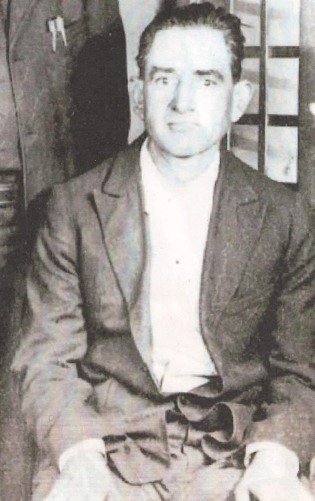
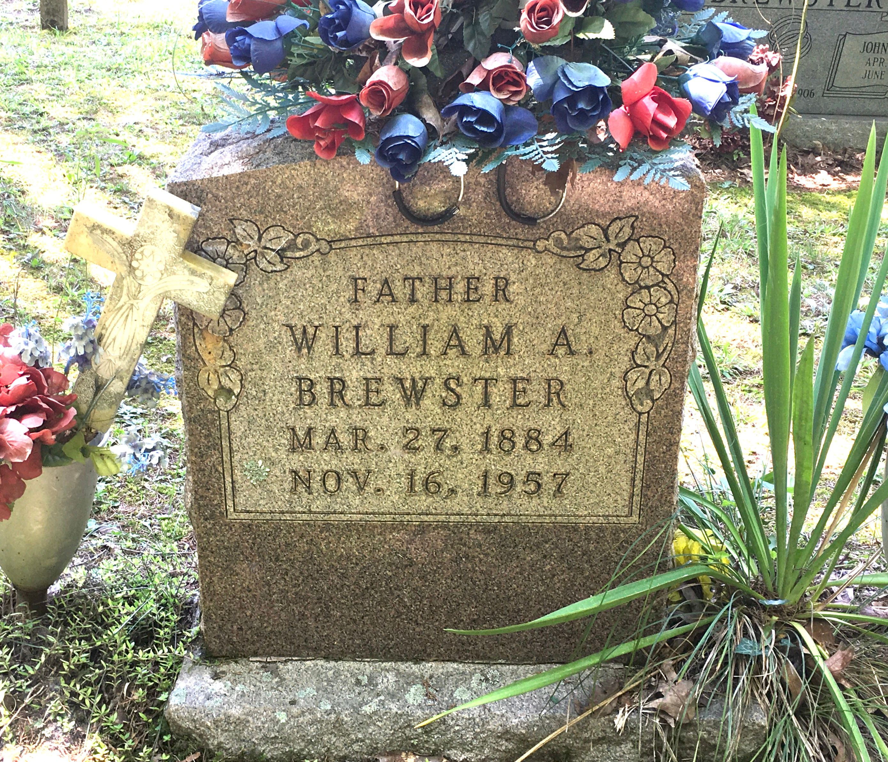

William Alexander Brewster
28 March 1884 – 16 November 1957
Quick Facts
Immediate Family
Parents
James Thomas Brewster (1854–1938) FAMILY ACCOUNTMary Catherine Patton (1847–?) DOCUMENTED — she went by her mother's name, Brown
Spouse
Mary Ellen McKinney (1889–1927), married 21 Oct 1905 FAMILY ACCOUNTJulia Bell Kelly (1914–1997), second wife FAMILY ACCOUNT
Children
Homer William Brewster Sr. (1911–1991), son of Mary Ellen DOCUMENTEDLola Edna Brewster (Sears) (1914–1968), daughter of Mary Ellen DOCUMENTED
Cleo R. Brewster (1940–2024), William Jr. (1952–2017), Mary Lee (Evans), James, Sarah Elizabeth (Galloway), Frankie, Laura Belle, Lucy, and Edward — children of Julia, named in the children's obituaries SUPPORTED
Siblings
- John S. Brewster DOCUMENTED
- Martin S. Brewster DOCUMENTED
- Charles A. Brewster DOCUMENTED
- Andrew M. Brewster DOCUMENTED
- Walter J. Brewster DOCUMENTED
- Jesse W. Brewster DOCUMENTED
- Jacob A. Brewster DOCUMENTED
- Rebecca Jane McKinney (Brewster) SUPPORTED
- Mary Lurenda "Polly" Berry (Brewster) SUPPORTED
- James Walter Brewster SUPPORTED
- Jane Ellen McKinney (Brewster) SUPPORTED
William and his seven brothers appear with their parents in the 1900 census household of James Thomas Brewster. His sisters Rebecca and Polly, brother James Walter, and sister Jane Ellen are linked as James Thomas's children on Geni. Census brother Walter J. has not been matched to a Geni profile and is left unlinked; whether he and James Walter are the same man is not settled.
On Family Tree Sites
Couple Folder
Life Timeline
1884 · age 0
Born, Brewstertown, Morgan County, Tennessee FAMILY ACCOUNT
1900 · age 16
At home with his parents and seven brothers, Morgan County, Tennessee DOCUMENTED
1905 · age 21
Married Mary Ellen McKinney, Fentress County, Tennessee FAMILY ACCOUNT
1911 · age 27
Son Homer William Brewster Sr. born, 31 August DOCUMENTED
1914 · age 30
Daughter Lola Edna Brewster born, 8 May, Brewstertown DOCUMENTED
1918 · age 34
Draft-registered, 12 September, Rugby, Morgan County DOCUMENTED
1927 · age 43
Wife Mary Ellen died (working date; see Research Notes) UNPROVED
1957 · age 73
Died, 16 November, Morgan County, Tennessee; buried at Brewstertown Cemetery DOCUMENTED
Life Story
William Alexander Brewster was born on 28 March 1884 in Brewstertown, Morgan County, Tennessee, the son of James Thomas Brewster and Mary Catherine Patton. His mother named him in her sworn 1907 Eastern Cherokee application, which lists William Alexander, born 28 March 1884, among her children.
William and Mary Ellen McKinney married on 21 October 1905 in Fentress County, Tennessee. No marriage record has been located; the previous Fentress County courthouse had burned in December 1904, which may explain why.
Their son Homer William Brewster Sr. was born on 31 August 1911. That Mary Ellen was Homer's mother is settled: Cleo R. Brewster, William's daughter and Homer's sister, was adamant about it, and the records agree — Homer was born inside William and Mary Ellen's marriage. Their daughter Lola Edna was born on 8 May 1914 in Brewstertown; an Ancestry index names William and Mary Ellen as her parents. She died on 17 April 1968 in Cincinnati and married into the Sears family.
On 12 September 1918 William registered for the draft in Morgan County. His card gives his home as Rugby, his work as a laborer for S. M. Morton at Rose, and his nearest relative as his wife Mary Brewster. He signed with his mark. The card describes him as tall, of medium build, with dark grey eyes and black hair. No record of actual service has been found.
After Mary Ellen's death, William married Julia Bell Kelly, the daughter of James Patrick Kelly and Laura Bell Underwood. Julia was the younger sister of Sarah Hazel Kelly — so the Kelly sisters married a Brewster father and son. William and Julia's children, named in the children's obituaries, were Cleo, William Jr., Mary Lee, James, Sarah Elizabeth, Frankie, Laura Belle, Lucy, and Edward.
William died on 16 November 1957 in Morgan County and is buried at Brewstertown Cemetery. His marker reads 27 March 1884 to 16 November 1957.
Photo Gallery


Sources and Evidence
- Sworn Eastern Cherokee application of Mary Catherine Brewster, NARA M1104 Reel 332 No. 43484 (9 Sep 1907, Rugby, Morgan Co., TN): lists "William Alexander, 23, born Mar. 28, 1884" among her children; husband James Thomas Brewster DOCUMENTED
- 1900 U.S. census, James Thomas Brewster household, Morgan County, Tennessee: William A. at home among eight sons DOCUMENTED
- WWI draft registration card, William Alexander Brewster, 12 Sep 1918, Rugby, Morgan County, Tennessee: laborer for S. M. Morton at Rose; nearest relative wife Mary Brewster; signed with his mark DOCUMENTED
- Marker photograph, Brewstertown Cemetery (2021): "WILLIAM A. BREWSTER / MAR. 27, 1884 / NOV. 16, 1957 / GONE BUT NOT FORGOTTEN" DOCUMENTED
- 1900 U.S. census, Scott County, Tennessee, ED 128, sheet 16A, household 325: Mary, 11, b. May 1889, in the household of James Alexander McKinney and Amanda J. Davis DOCUMENTED
- Ancestry index: Lola Brewster, b. 8 May 1914 Brewstertown, d. 17 Apr 1968 Cincinnati, parents William Alexander Brewster and Mary Ellen McKinney SUPPORTED
Grades: DOCUMENTED an original record says it · SUPPORTED several records point to it · FAMILY ACCOUNT the family's own telling · UNPROVED a lead, not proved.
Research Notes and Open Questions
- Birth day: 28 March (family account and his mother's sworn application) vs. 27 March (marker). Both are carried; the marker reading is the one discrepancy.
- Death year: 1957 (marker) vs. 1956 (Find a Grave page text, treated as a typo; an unsourced Ancestry snippet says 12 Nov 1956, Oneida, Scott County — unproved).
- Mary Ellen's death date is not settled: 12 December 1919, 1927, or 1936, with no death certificate found. The 1927 date is the working date (see her page).
- No marriage record has been found for William × Mary Ellen (1905); the Fentress courthouse fire of December 1904 is the plausible explanation. William × Julia married 15 June 1929, Newport, Kentucky.
- Julia Bell Kelly's death day is carried as 27 August 1997 here; an alternate reading of 22 August exists and is held open with the Kelly couple's work.
- One small cemetery-stone photograph in the couple's folder (img-070) is too weathered and small to identify whose stone it is; it is held off the pages, not deleted.
- Geni's headers give different years for two of Julia's children than the years shown above (William Jr. born 1946; Cleo's birth estimated); neither has been settled against a birth record.
- William's 1910–1940 census households have not been recovered; they would show his household by year.
Profile history: Created 4 November 2026 from the family couple profile and research notes.